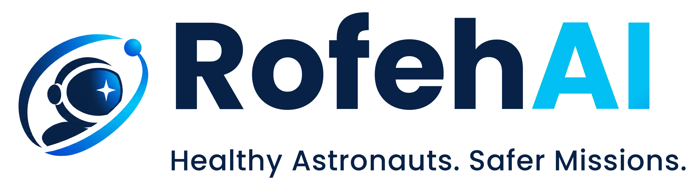
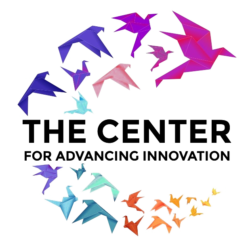
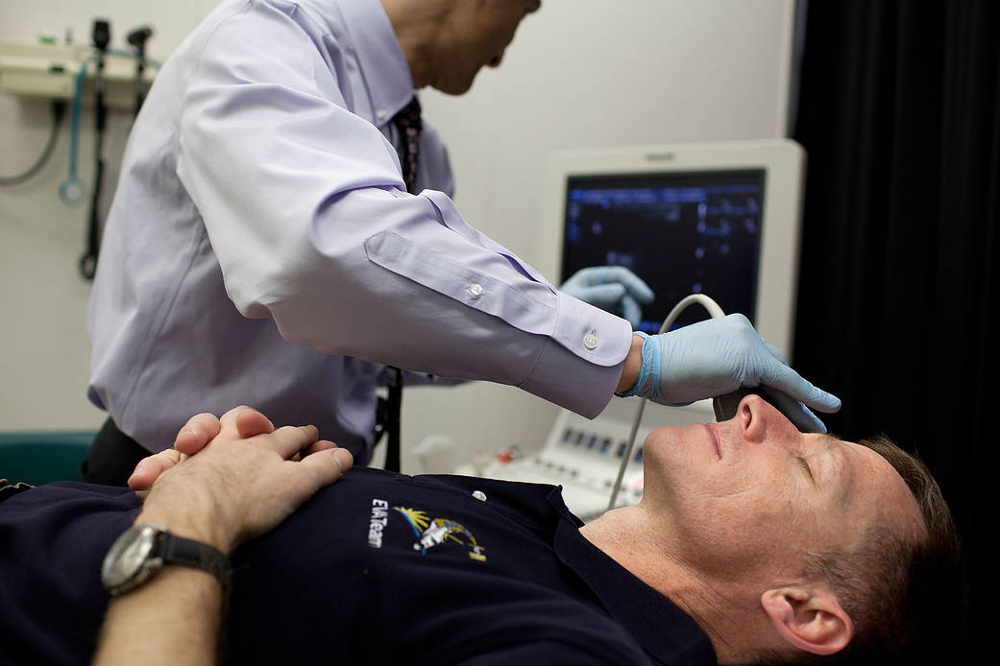

RofehAICatch spaceflight blindness before it happens.
RofehAI learns each astronaut's body over the course of a mission — not a population average — and gives a flight surgeon the moment they need to act, before Earth is even reachable.


Earth is minutes away. Sometimes it isn't reachable at all.
A message to and from a Mars-class mission can take the better part of an hour round-trip — and a solar event or an antenna misalignment can cut that link off completely. Long-duration spaceflight carries real risks, like SANS and immune dysregulation, that today's monitoring checks against a population average rather than how a specific person has actually been trending. By the time Earth learns something is wrong, the crew has usually already had to notice it, work out what it means, and describe it themselves.

One platform, from continuous monitoring to the moment a clinician needs to see it.
Personalized trajectory monitoring
Every crew member gets their own baseline, not a population norm. SANS and immune-dysregulation risk are scored against how that person specifically has been trending — with a confidence figure, never a false-precision number when the data isn't there yet.
Ask the briefing agent
A flight surgeon can ask a plain question — about one crew member, or the whole roster at once — and get an answer assembled entirely from real, fetched data. It remembers the conversation, and it never writes clinical text of its own.
Near-real-time clinical relay
When something changes significantly, RofehAI packages the evidence immediately and queues it for transmission the moment a link exists — reducing the delay that's actually within its control, while a human always makes the call.
Who this is for
- Investors and reviewers evaluating the concept and technical approach
- Potential institutional partners (e.g. TRISH) assessing feasibility
- Collaborators and advisors reviewing the architecture
What this is not
- Not a clinically validated product — runs on synthetic demo data only
- Not a medical device, not for real clinical or diagnostic use
- Not a finished commercial product — concept / reference stage
RofehAI is a working reference implementation of a proposed architecture for long-duration spaceflight health monitoring. It is not a medical device, is not FDA-cleared, and has not been clinically validated. Access is by request and reviewed individually — request a demo account above to explore the live system.